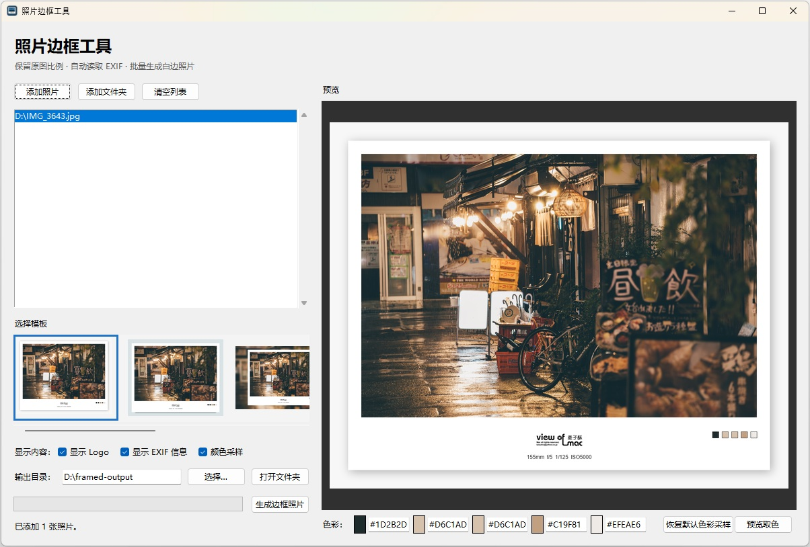
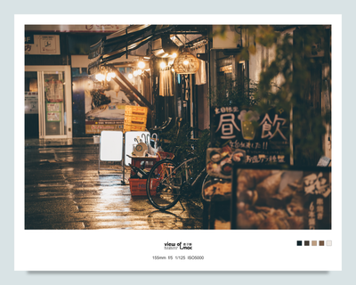
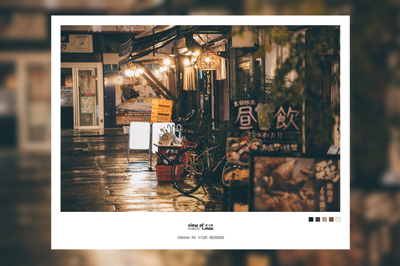

Light Frame Studio
Windows 本地照片边框工具。批量导入照片，选择六种边框模板，保留 EXIF、Logo 与五色采样，然后输出完整分辨率成片。
关于
Light Frame Studio 面向摄影作品的展示与分享。它在本机为 JPG、JPEG 与 PNG 照片批量生成边框成片，不上传照片，也不依赖网络服务。软件始终保留原图比例，并可自动读取焦距、光圈、快门和 ISO。
功能
照片与输出
- 添加多张照片或整个文件夹
- 支持 JPG、JPEG 与 PNG
- 全部导入照片自动参与批量输出
- 默认输出高质量 JPEG
- 自动避免同名文件覆盖
- 可直接打开输出文件夹
边框与信息
- 六种预设边框模板
- 不拉伸原始照片比例
- Logo 与 EXIF 可独立开关
- 自动读取焦距、光圈、快门、ISO
- 模板 3 至 6 使用原图模糊背景
- 预览缩小，导出保留完整分辨率
颜色采样与性能
- 从原始照片提取五种核心颜色
- 每个色块均可手动编辑 HEX 值
- 支持从预览照片主体直接取色
- 后台单队列预览，避免切图阻塞
- 缓存 EXIF、颜色、Logo 与字体资源
- 最多两张照片并行输出
软件界面图

模板例图





快速开始
通过以下步骤完成第一张带边框的照片。
1. 启动 照片边框工具.exe
2. 添加照片或添加文件夹
3. 选择模板，并按需要开关 Logo、EXIF、颜色采样
4. 调整 HEX 色值或使用预览取色
5. 选择输出目录，点击“生成边框照片”
2. 添加照片或添加文件夹
3. 选择模板，并按需要开关 Logo、EXIF、颜色采样
4. 调整 HEX 色值或使用预览取色
5. 选择输出目录，点击“生成边框照片”
本地处理
所有照片、EXIF 信息与颜色采样均在本机完成。软件不上传照片，也不依赖网络服务。
GitHub
查看源代码、提交问题或关注项目进展。
许可协议
本项目采用 PolyForm Noncommercial License 1.0.0，以非商业源码公开方式发布。商业使用须事先取得作者书面同意。详见 LICENSE 文件。
作者
麦子酥 / Mac Su